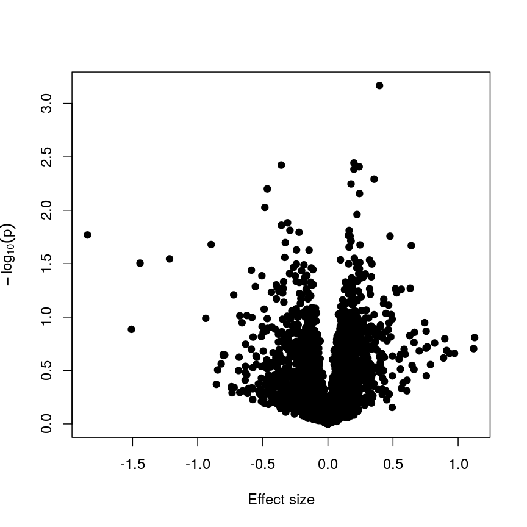
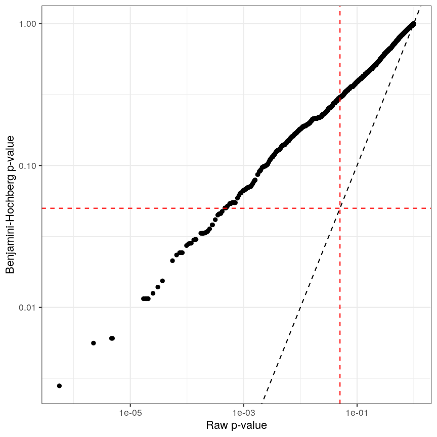
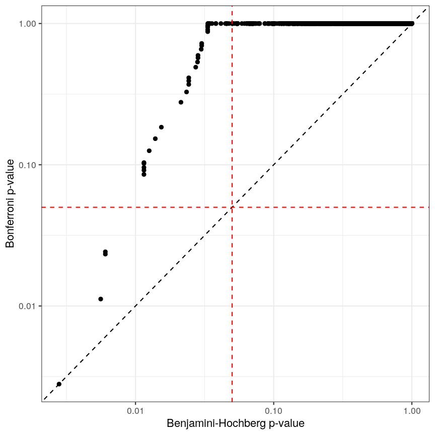

Regression with many outcomes
Overview
Teaching: 60 min
Exercises: 30 minQuestions
How can we apply linear regression in a high-dimensional setting?
How can we benefit from the fact that we have many outcomes?
How can we control for the fact that we do many tests?
Objectives
Perform and critically analyse high dimensional regression.
Understand methods for shrinkage of noise parameters in high-dimensional regression.
Perform multiple testing adjustment.
DNA methylation data
For the following few episodes, we will be working with human DNA methylation data from flow-sorted blood samples. DNA methylation assays measure, for each of many sites in the genome, the proportion of DNA that carries a methyl mark (a chemical modification that does not alter the DNA sequence). In this case, the methylation data come in the form of a matrix of normalised methylation levels (M-values), where negative values correspond to unmethylated DNA and positive values correspond to methylated DNA. Along with this, we have a number of sample phenotypes (eg, age in years, BMI).
Let’s read in the data for this episode:
library("here")
library("minfi")
methylation <- readRDS(here("data/methylation.rds"))
Note: the code that we used to download these data from its source is available here
This methylation object is a GenomicRatioSet, a Bioconductor data
object derived from the SummarizedExperiment class. These
SummarizedExperiment objects contain assays, in this case
normalised methylation levels, and optional sample-level colData and
feature-level metadata. These objects are very convenient to contain
all of the information about a dataset in a high-throughput context. If
you would like more detail on these objects it may be useful to consult
the vignettes on
Bioconductor.
methylation
class: GenomicRatioSet
dim: 5000 37
metadata(0):
assays(2): M CN
rownames(5000): cg00075967 cg00374717 ... cg08482167 cg13174700
rowData names(0):
colnames(37): 201868500150_R01C01 201868500150_R03C01 ...
201870610111_R06C01 201870610111_R07C01
colData names(14): Sample_Well Sample_Name ... Array Slide
Annotation
array: IlluminaHumanMethylationEPIC
annotation: ilm10b4.hg19
Preprocessing
Method: Raw (no normalization or bg correction)
minfi version: 1.38.0
Manifest version: 0.3.0
You can see in this output that this object has a dim() of
$5000 \times 37$, meaning it has
5000 features and 37 columns. To
extract the matrix of methylation M-values, we can use the
assay() function. One thing to bear in mind with these objects (and
data structures for computational biology in R generally) is that in the
matrix of methylation data, samples or observations are stored as
columns, while features (in this case, sites in the genome) are stored as rows.
This is in contrast to usual tabular data, where features or variables
are stored as columns and observations are stored as rows.
methyl_mat <- assay(methylation)
The distribution of these M-values looks like this:
hist(methyl_mat, breaks = "FD", xlab = "M-value")
Methylation levels are generally bimodally distributed.
You can see that there are two peaks in this distribution, corresponding to features which are largely unmethylated and methylated, respectively.
Similarly, we can examine the colData(), which represents the
sample-level metadata we have relating to these data. In this case, the
metadata, phenotypes, and groupings in the colData look like this for
the first 6 samples:
knitr::kable(head(colData(methylation)), row.names = FALSE)
| Sample_Well | Sample_Name | purity | Sex | Age | weight_kg | height_m | bmi | bmi_clas | Ethnicity_wide | Ethnic_self | smoker | Array | Slide |
|---|---|---|---|---|---|---|---|---|---|---|---|---|---|
| A07 | PCA0612 | 94 | M | 39 | 88.45051 | 1.8542 | 25.72688 | Overweight | Mixed | Hispanic | No | R01C01 | 201868500150 |
| C07 | NKpan2510 | 95 | M | 49 | 81.19303 | 1.6764 | 28.89106 | Overweight | Indo-European | Caucasian | No | R03C01 | 201868500150 |
| E07 | WB1148 | 95 | M | 20 | 80.28585 | 1.7526 | 26.13806 | Overweight | Indo-European | Persian | No | R05C01 | 201868500150 |
| G07 | B0044 | 97 | M | 49 | 82.55381 | 1.7272 | 27.67272 | Overweight | Indo-European | Caucasian | No | R07C01 | 201868500150 |
| H07 | NKpan1869 | 95 | F | 33 | 87.54333 | 1.7272 | 29.34525 | Overweight | Indo-European | Caucasian | No | R08C01 | 201868500150 |
| B03 | NKpan1850 | 93 | F | 21 | 87.54333 | 1.6764 | 31.15070 | Obese | Mixed | Finnish/Creole | No | R02C01 | 201868590193 |
In this episode, we will focus on the association between age and methylation. The following heatmap summarises age and methylation levels available in the Prostate dataset:
age <- methylation$Age
library("ComplexHeatmap")
order <- order(age)
age_ord <- age[order]
methyl_mat_ord <- methyl_mat[, order]
Heatmap(methyl_mat_ord,
name = "M-value",
cluster_columns = FALSE,
show_row_names = FALSE,
show_column_names = FALSE,
row_title = "Feature",
column_title = "Sample",
top_annotation = columnAnnotation(age = age_ord))
Visualising the data as a heatmap, it's clear that there's too many models to fit 'by hand'.
Depending on the scientific question of interest, two types of high-dimensional problems could be explored in this context:
-
To predict age using methylation levels as predictors. In this case, we would have a single outcome (age) which will be predicted using 5000 covariates (methylation levels across the genome).
-
To predict methylation levels using age as a predictor. In this case, we would have 5000 outcomes (methylation levels across the genome) and a single covariate (age).
The examples in this episode will focus on the second type of problem, whilst the next episode will focus on the first.
Challenge 1
Why can we not just fit many linear regression models, one for each of the columns in the
colDataabove against each of the features in the matrix of assays, and choose all of the significant results at a p-value of 0.05?Solution
There are a number of problems that this kind of approach presents. For example: 1. Without a research question in mind when creating a model, it’s not clear how we can interpret each model, and rationalising the results after the fact can be dangerous; it’s easy to make up a “story” that isn’t grounded in anything but the fact that we have significant findings. 2. We may not have a representative sample for each of these covariates. For example, we may have very small sample sizes for some ethnicities, leading to spurious findings. 3. If we perform 5000 tests for each of 14 variables, even if there were no true associations in the data, we’d be likely to observe some strong spurious associations that arise just from random noise.
Measuring DNA Methylation
DNA methylation is an epigenetic modification of DNA. Generally, we are interested in the proportion of methylation at many sites or regions in the genome. DNA methylation microarrays, as we are using here, measure DNA methylation using two-channel microarrays, where one channel captures signal from methylated DNA and the other captures unmethylated signal. These data can be summarised as “Beta values” ($\beta$ values), which is the ratio of the methylated signal to the total signal (methylated plus unmethylated). The $\beta$ value for site $i$ is calculated as
\[\beta_i = \frac{ m_i } { u_{i} + m_{i} }\]where $m_i$ is the methylated signal for site $i$ and $u_i$ is the unmethylated signal for site $i$. $\beta$ values take on a value in the range $[0, 1]$, with 0 representing a completely unmethylated site and 1 representing a completely methylated site.
The M-values we use here are the $\log_2$ ratio of methylated versus unmethylated signal:
\[M_i = \log_2\left(\frac{m_i}{u_i}\right)\]M-values are not bounded to an interval as Beta values are, and therefore can be easier to work with in statistical models.
Regression with many outcomes
In high-throughput studies, it is common to have one or more phenotypes or groupings that we want to relate to features of interest (eg, gene expression, DNA methylation levels). In general, we want to identify differences in the features of interest that are related to a phenotype or grouping of our samples. Identifying features of interest that vary along with phenotypes or groupings can allow us to understand how phenotypes arise or manifest. Analysis of this type is sometimes referred to using the term differential analysis.
For example, we might want to identify genes that are expressed at a higher level in mutant mice relative to wild-type mice to understand the effect of a mutation on cellular phenotypes. Alternatively, we might have samples from a set of patients, and wish to identify epigenetic features that are different in young patients relative to old patients, to help us understand how ageing manifests.
Using linear regression, it is possible to identify differences like
these. However, high-dimensional data like the ones we’re working with
require some special considerations. A primary consideration, as we saw
above, is that there are far too many features to fit each one-by-one as
we might do when analysing low-dimensional datasets (for example using
lm on each feature and checking the linear model assumptions). A
secondary consideration is that statistical approaches may behave
slightly differently in very high-dimensional data, compared to
low-dimensional data. A third consideration is the speed at which we can
actually compute statistics for data this large – methods optimised for
low-dimensional data may be very slow when applied to high-dimensional
data.
Ideally when performing regression, we want to identify cases like this, where there is a clear association, and we probably “don’t need” statistics:
A scatter plot of age and a feature of interest.
or equivalently for a discrete covariate:
A scatter plot of a grouping and a feature of interest.
However, often due to small differences and small sample sizes, the problem is more difficult:
A scatter plot of a grouping and a feature of interest.
And, of course, we often have an awful lot of features and need to prioritise a subset of them! We need a rigorous way to prioritise genes for further analysis.
Fitting a linear model
So, in the data we have read in, we have a matrix of methylation values $X$ and a vector of ages, $y$. One way to model this is to see if we can use age to predict the expected (average) methylation value for sample $j$ at a given locus $i$, which we can write as $X_{ij}$. We can write that model as:
\[\mathbf{E}(X_{ij}) = \beta_0 + \beta_1 \text{Age}_j\]where $\text{Age}_j$ is the age of sample $j$. In this model, $\beta_1$
represents the unit change in mean methylation level for each unit
(year) change in age. For a specific CpG, we can fit this model and get more
information from the model object. For illustration purposes, here we
arbitrarily select the first CpG in the methyl_mat matrix (the one on its first row).
age <- methylation$Age
# methyl_mat[1, ] indicates that the 1st CpG will be used as outcome variable
lm_age_methyl1 <- lm(methyl_mat[1, ] ~ age)
lm_age_methyl1
Call:
lm(formula = methyl_mat[1, ] ~ age)
Coefficients:
(Intercept) age
0.902334 0.008911
We now have estimates for the expected methylation level when age equals 0 (the intercept) and the change in methylation level for a unit change in age (the slope). We could plot this linear model:
plot(age, methyl_mat[1, ], xlab = "Age", ylab = "Methylation level", pch = 16)
abline(lm_age_methyl1)
A scatter plot of age versus the methylation level for an arbitrarily selected CpG side (the one stored as the first column of methyl_mat). Each dot represents an individual. The black line represents the estimated linear model.
For this feature, we can see that there is no strong relationship between methylation and age. We could try to repeat this for every feature in our dataset; however, we have a lot of features! We need an approach that allows us to assess associations between all of these features and our outcome while addressing the three considerations we outlined previously. Before we introduce this approach, let’s go into detail about how we generally check whether the results of a linear model are statistically significant.
Hypothesis testing in linear regression
Using the linear model we defined above, we can ask questions based on the estimated value for the regression coefficients. For example, do individuals with different age have different methylation values for a given CpG? We usually do this via hypothesis testing. This framework compares the results that we observed (here, estimated linear model coefficients) to the results you would expect under a null hypothesis associated to our question. In the example above, a suitable null hypothesis would test whether the regression coefficient associated to age ($\beta_1$) is equal to zero or not. If $\beta_1$ is equal to zero, the linear model indicates that there is no linear relationship between age and the methylation level for the CpG (remember: as its name suggests, linear regression can only be used to model linear relationships between predictors and outcomes!). In other words, the answer to our question would be: no!
The output of a linear model typically returns the results associated with the null hypothesis described above (this may not always be the most realistic or useful null hypothesis, but it is the one we have by default!). To be more specific, the test compares our observed results with a set of hypothetical counter-examples of what we would expect to observe if we repeated the same experiment and analysis over and over again under the null hypothesis.
For this linear model, we can use tidy() from the broom package to
extract detailed information about the coefficients and the associated
hypothesis tests in this model:
library("broom")
tidy(lm_age_methyl1)
# A tibble: 2 × 5
term estimate std.error statistic p.value
<chr> <dbl> <dbl> <dbl> <dbl>
1 (Intercept) 0.902 0.344 2.62 0.0129
2 age 0.00891 0.0100 0.888 0.381
The standard errors (std.error) represent the statistical uncertainty in our
regression coefficient estimates (often referred to as effect size). The test
statistics and p-values represent measures of how (un)likely it would be to observe
results like this under the “null hypothesis”.
Challenge 2
In the model we fitted, the estimate for the intercept is 0.902 and its associated p-value is 0.0129. What does this mean?
Solution
The first coefficient in a linear model like this is the intercept, which measures the mean of the outcome (in this case, the methylation value for the first CpG) when age is zero. In this case, the intercept estimate is 0.902. However, this is not a particularly noteworthy finding as we do not have any observations with age zero (nor even any with age < 20!).
The reported p-value is associated to the following null hypothesis: the intercept ($\beta_0$ above) is equal to zero. Using the usual significance threshold of 0.05, we reject the null hypothesis as the p-value is smaller than 0.05. However, it is not really interesting if this intercept is zero or not, since we probably do not care what the methylation level is when age is zero. In fact, this question does not even make much sense! In this example, we are more interested in the regression coefficient associated to age, as that can tell us whether there is a linear relationship between age and methylation for the CpG.
Fitting a lot of linear models
In the linear model above, we are generally interested in the second regression coefficient (often referred to as slope) which measures the linear relationship between age and methylation levels. For the first CpG, here is its estimate:
coef_age_methyl1 <- tidy(lm_age_methyl1)[2, ]
coef_age_methyl1
# A tibble: 1 × 5
term estimate std.error statistic p.value
<chr> <dbl> <dbl> <dbl> <dbl>
1 age 0.00891 0.0100 0.888 0.381
In this case, the p-value is equal to 0.381 and therefore we cannot reject the null hypothesis: there is no statistical evidence to suggest that the regression coefficient associated to age is not equal to zero.
Now, we could do this for every feature (CpG) in the dataset and rank the results based on their test statistic or associated p-value. However, fitting models in this way to 5000 features is not very computationally efficient, and it would also be laborious to do programmatically. There are ways to get around this, but first let us talk about what exactly we are doing when we look at significance tests in this context.
How does hypothesis testing for a linear model work?
In order to decide whether a result would be unlikely under the null hypothesis, we must calculate a test statistic. For coefficient $k$ in a linear model (in our case, it would be the slope), the test statistic is a t-statistic given by:
\[t_{k} = \frac{\hat{\beta}_{k}}{SE\left(\hat{\beta}_{k}\right)}\]$SE\left(\hat{\beta}_{k}\right)$ measures the uncertainty we have in our effect size estimate. Knowing what distribution these t-statistics follow under the null hypothesis allows us to determine how unlikely it would be for us to observe what we have under those circumstances, if we repeated the experiment and analysis over and over again. To demonstrate, we can compute the t-statistics “by hand” (advanced content).
table_age_methyl1 <- tidy(lm_age_methyl1)
We can see that the t-statistic is just the ratio between the coefficient estimate and the standard error:
tvals <- table_age_methyl1$estimate / table_age_methyl1$std.error
all.equal(tvals, table_age_methyl1$statistic)
[1] TRUE
Calculating the p-values is a bit more tricky. Specifically, it is the proportion of the distribution of the test statistic under the null hypothesis that is as extreme or more extreme than the observed value of the test statistic. This is easy to observe visually, by plotting the theoretical distribution of the test statistic under the null hypothesis (see next call-out box for more details about it):
The p-value for a regression coefficient represents how often it'd be observed under the null.
The red-ish shaded region represents the portion of the distribution of the test statistic under the null hypothesis that is equal or greater to the value we observe for the intercept term. As our null hypothesis relates to a 2-tailed test (as the null hypothesis states that the regression coefficient is equal to zero, we would reject it if the regression coefficient is substantially larger or smaller than zero), the p-value for the test is twice the value of the shaded region. In this case, the shaded region is small relative to the total area of the null distribution; therefore, the p-value is small ($p=0.013$). The blue-ish shaded region represents the same measure for the slope term; this is larger, relative to the total area of the distribution, therefore the p-value is larger than the one for the intercept term ($p=0.381$). The the p-value is a function of the test statistic: the ratio between the effect size we’re estimating and the uncertainty we have in that effect. A large effect with large uncertainty may not lead to a small p-value, and a small effect with small uncertainty may lead to a small p-value.
Calculating p-values from a linear model
Manually calculating the p-value for a linear model is a little bit more complex than calculating the t-statistic. The intuition posted above is definitely sufficient for most cases, but for completeness, here is how we do it:
Since the statistic in a linear model is a t-statistic, it follows a student t distribution under the null hypothesis, with degrees of freedom (a parameter of the student t-distribution) given by the number of observations minus the number of coefficients fitted, in this case $37 - 2 = 35$. We want to know what portion of the distribution function of the test statistic is as extreme as, or more extreme than, the value we observed. The function
pt()(similar topnorm(), etc) can give us this information.Since we’re not sure if the coefficient will be larger or smaller than zero, we want to do a 2-tailed test. Therefore we take the absolute value of the t-statistic, and look at the upper rather than lower tail. In the figure above the shaded areas are only looking at “half” of the t-distribution (which is symmetric around zero), therefore we multiply the shaded area by 2 in order to calculate the p-value.
Combining all of this gives us:
pvals <- 2 * pt(abs(tvals), df = lm_age_methyl1$df, lower.tail = FALSE) all.equal(table_age_methyl1$p.value, pvals)[1] TRUE
Sharing information across outcome variables
Now that we understand how hypothesis tests work in the linear model framework, we are going to introduce an idea that allows us to take advantage of the fact that we carry out many tests at once on structured data. We can leverage this fact to share information between model parameters. The insight that we use to perform information pooling or sharing is derived from our knowledge about the structure of the data. For example, in a high-throughput experiment like a DNA methylation assay, we know that all of the features were measured simultaneously, using the same technique. This means that generally, we expect the base-level variability for each feature to be broadly similar.
This can enable us to get a better estimate of the uncertainty of model parameters than we could get if we consider each feature in isolation. So, to share information between features allows us to get more robust estimators. Remember that the t-statistic for coefficient $\beta_k$ in a linear model is the ratio between the coefficient estimate and its standard error:
\[t_{k} = \frac{\hat{\beta}_{k}}{SE\left(\hat{\beta}_{k}\right)}\]It is clear that large effect sizes will likely lead to small p-values, as long as the standard error for the coefficent is not large. However, the standard error is affected by the amount of noise, as we saw earlier. If we have a small number of observations, it is common for the noise for some features to be extremely small simply by chance. This, in turn, causes small p-values for these features, which may give us unwarranted confidence in the level of certainty we have in the results (false positives).
There are many statistical methods in genomics that use this type of
approach to get better estimates by pooling information between features
that were measured simultaneously using the same techniques. Here we
will focus on the package limma, which is an established software
package used to fit linear models, originally for the gene expression
micro-arrays that were common in the 2000s, but which is still in use in
RNAseq experiments, among others. The authors of limma made some
assumptions about the distributions that these follow, and pool
information across genes to get a better estimate of the uncertainty in
effect size estimates. It uses the idea that noise levels should be
similar between features to moderate the estimates of the test
statistic by shrinking the estimates of standard errors towards a common
value. This results in a moderated t-statistic.
The process of running a model in limma is somewhat different to what you
may have seen when running linear models. Here, we define a model matrix or
design matrix, which is a way of representing the
coefficients that should be fit in each linear model. These are used in
similar ways in many different modelling libraries.
library("limma")
design_age <- model.matrix(~age)
dim(design_age)
[1] 37 2
head(design_age)
(Intercept) age
1 1 39
2 1 49
3 1 20
4 1 49
5 1 33
6 1 21
What is a model matrix?
When R fits a regression model, it chooses a vector of regression coefficients that minimises the differences between outcome values and those values predicted by using the covariates (or predictor variables). But how do we get from a set of predictors and regression coefficients to predicted values? This is done via matrix multipliciation. The matrix of predictors is (matrix) multiplied by the vector of coefficients. That matrix is called the model matrix (or design matrix). It has one row for each observation and one column for each predictor plus (by default) one aditional column of ones (the intercept column). Many R libraries (but not
limma) contruct the model matrix behind the scenes. Usually, it can be extracted from a model fit using the functionmodel.matrix(). Here is an example:data(cars) head(cars)speed dist 1 4 2 2 4 10 3 7 4 4 7 22 5 8 16 6 9 10mod1 <- lm(dist ~ speed, data=cars) # fit regression model using speed as a predictor head(model.matrix(mod1)) # the model matrix contains two columns: intercept and speed(Intercept) speed 1 1 4 2 1 4 3 1 7 4 1 7 5 1 8 6 1 9
As you can see, the design matrix has the same number of rows as our
methylation data has samples. It also has two columns - one for the
intercept (similar to the linear model we fit above) and one for age.
This happens “under the hood” when fitting a linear model with lm(), but
here we have to specify it directly. The limma user
manual
has more detail on how to make design matrices for different types of
experimental design, but here we are going to stick with this simple two-variable case.
We then pass our matrix of methylation values into lmFit(), specifying
the design matrix. Internally, this function runs lm() on each row of
the data in an efficient way. The function eBayes(), when applied to the
output of lmFit(), performs the pooled estimation of standard errors
that results in the moderated t-statistics and resulting p-values.
fit_age <- lmFit(methyl_mat, design = design_age)
fit_age <- eBayes(fit_age)
To obtain the results of the linear models, we can use the topTable()
function. By default, this returns results for the first coefficient in
the model. As we saw above when using lm(), and when we defined
design_age above, the first coefficient relates to the intercept term,
which we are not particularly interested in here; therefore we specify
coef = 2. Further, topTable() by default only returns the top 10
results. To see all of the results in the data, we specify
number = nrow(fit_age) to ensure that it returns a row for every row
of the input matrix.
toptab_age <- topTable(fit_age, coef = 2, number = nrow(fit_age))
orderEffSize <- rev(order(abs(toptab_age$logFC))) # order by effect size (absolute log-fold change)
head(toptab_age[orderEffSize, ])
logFC AveExpr t P.Value adj.P.Val B
cg22160073 -0.07615967 0.2261869 -2.200534 0.03410063 0.2563957 -5.536033
cg02371766 -0.07480442 1.6744282 -2.032526 0.04933710 0.3004092 -5.861179
cg18633711 -0.07221177 -0.1668962 -2.254569 0.03017881 0.2459313 -5.427228
cg01267675 -0.06393861 1.2496114 -2.127641 0.04010694 0.2758387 -5.679584
cg07334644 -0.05880317 0.9591176 -2.297448 0.02735916 0.2339981 -5.339467
cg01387455 -0.05873510 0.5872700 -2.051339 0.04737637 0.2964936 -5.825782
The output of topTable includes the coefficient, here termed a log
fold change logFC, the average level (aveExpr), the t-statistic t,
the p-value (P.Value), and the adjusted p-value (adj.P.Val). We’ll
cover what an adjusted p-value is very shortly. The table also includes
B, which represents the log-odds that a feature is signficantly
different, which we won’t cover here, but which will generally be a 1-1
transformation of the p-value. The coefficient estimates here are termed
logFC for legacy reasons relating to how microarray experiments were
traditionally performed. There are more details on this topic in many
places, for example this tutorial by Kasper D.
Hansen
Now we have estimates of effect sizes and p-values for the association between methylation level at each locus and age for our 37 samples. It’s useful to create a plot of effect size estimates (model coefficients) against p-values for each of these linear models, to visualise the magnitude of effects and the statistical significance of each. These plots are often called “volcano plots”, because they resemble an eruption.
plot(toptab_age$logFC, -log10(toptab_age$P.Value),
xlab = "Effect size", ylab = bquote(-log[10](p-value)),
pch = 19
)
Plotting p-values against effect sizes using limma; the results are similar to a standard linear model.
In this figure, every point represents a feature of interest. The x-axis represents the effect size observed for that feature in a linear model, while the y-axis is the $-\log_{10}(\text{p-value})$, where larger values indicate increasing statistical evidence of a non-zero effect size. A positive effect size represents increasing methylation with increasing age, and a negative effect size represents decreasing methylation with increasing age. Points higher on the x-axis represent features for which we think the results we observed would be very unlikely under the null hypothesis.
Since we want to identify features that have different methylation levels in different age groups, in an ideal case there would be clear separation between “null” and “non-null” features. However, usually we observe results as we do here: there is a continuum of effect sizes and p-values, with no clear separation between these two classes of features. While statistical methods exist to derive insights from continuous measures like these, it is often convenient to obtain a list of features which we are confident have non-zero effect sizes. This is made more difficult by the number of tests we perform.
Challenge 3
The effect size estimates are very small, and yet many of the p-values are well below a usual significance level of p < 0.05. Why is this?
Solution
Because age has a much larger range than methylation levels, the unit change in methylation level even for a strong relationship is very small!
As we mentioned, the p-value is a function of both the effect size estimate and the uncertainty (standard error) of that estimate. Because the uncertainty in our estimates is much smaller than the estimates themselves, the p-values are also small.
If we predicted age using methylation level, it is likely we would see much larger coefficients, though broadly similar p-values!
It is worthwhile considering what exactly the effect of the moderation
or information sharing that limma performs has on our results. To do
this, let us compare the effect sizes estimates and p-values from the two
approaches.
plot of chunk plot-limma-lm-effect
These are exactly identical! This is because limma does not perform
any sharing of information when estimating effect sizes. This is in
contrast to similar packages that apply shrinkage to the effect size
estimates, like DESeq2. These often use information sharing to shrink
or moderate the effect size estimates, in the case of DESeq2 by again
sharing information between features about sample-to-sample variability.
In contrast, let us look at the p-values from limma and R’s built-in lm() function:
plot of chunk plot-limma-lm-pval
we can see that for the vast majority of features, the results are
broadly similar. There seems to be a minor general tendency for limma
to produce smaller p-values, but for several features, the p-values from
limma are considerably larger than the p-values from lm(). This is
because the information sharing tends to shrink large standard error
estimates downwards and small estimates upwards. When the degree of
statistical significance is due to an abnormally small standard error
rather than a large effect, this effect results in this prominent
reduction in statistical significance, which has been shown to perform
well in case studies. The degree of shrinkage generally depends on the
amount of pooled information and the strength of the evidence
independent of pooling. For example, with very few samples and many
features, information sharing has a larger effect, because there are a
lot of genes that can be used to provide pooled estimates, and the
evidence from the data that this is weighed against is relatively
sparse. In contrast, when there are many samples and few features, there
is not much opportunity to generate pooled estimates, and the evidence
of the data can easily outweigh the pooling.
Shrinkage methods like these ones can be complex to implement and understand, but it is useful to develop an intuition about why these approaches may be more precise and sensitive than the naive approach of fitting a model to each feature separately.
Challenge 4
- Try to run the same kind of linear model with smoking status as covariate instead of age, and making a volcano plot. Note: smoking status is stored as
methylation$smoker.- We saw in the example in the lesson that this information sharing can lead to larger p-values. Why might this be preferable?
Solution
The following code runs the same type of model with smoking status:
design_smoke <- model.matrix(~methylation$smoker) fit_smoke <- lmFit(methyl_mat, design = design_smoke) fit_smoke <- eBayes(fit_smoke) toptab_smoke <- topTable(fit_smoke, coef = 2, number = nrow(fit_smoke)) plot(toptab_smoke$logFC, -log10(toptab_smoke$P.Value), xlab = "Effect size", ylab = bquote(-log[10](p)), pch = 19 )A plot of significance against effect size for a regression of smoking against methylation.
Being a bit more conservative when identifying features can help to avoid false discoveries. Furthermore, when rejecting the null hypothesis is based more on a small standard error resulting from abnormally low levels of variability for a given feature, we might want to be a bit more conservative in our expectations.
Shrinkage
Shrinkage is an intuitive term for an effect of information sharing, and is something observed in a broad range of statistical models. Often, shrinkage is induced by a multilevel modelling approach or by Bayesian methods.
The general idea is that these models incorporate information about the structure of the data into account when fitting the parameters. We can share information between features because of our knowledge about the data structure; this generally requires careful consideration about how the data were generated and the relationships within.
An example people often use is estimating the effect of attendance on grades in several schools. We can assume that this effect is similar in different schools (but maybe not identical), so we can share information about the effect size between schools and shrink our estimates towards a common value.
For example in
DESeq2, the authors used the observation that genes with similar expression counts in RNAseq data have similar dispersion, and a better estimate of these dispersion parameters makes estimates of fold changes much more stable. Similarly, inlimmathe authors made the assumption that in the absence of biological effects, we can often expect the technical variation in the measurement of the expression of each of the genes to be broadly similar. Again, better estimates of variability allow us to prioritise genes in a more reliable way.There are many good resources to learn about this type of approach, including:
The problem of multiple tests
With such a large number of features, it would be useful to decide which features are “interesting” or “significant” for further study. However, if we were to apply a normal significance threshold of 0.05, it would be likely we end up with a lot of false positives. This is because a p-value threshold like this represents a $\frac{1}{20}$ chance that we observe results as extreme or more extreme under the null hypothesis (that there is no assocation between age and methylation level). If we carry out many more than 20 such tests, we can expect to see situations where, despite the null hypothesis being true, we observe observe signifiant p-values due to random chance. To demonstrate this, it is useful to see what happens if we permute (scramble) the age values and run the same test again:
age_perm <- age[sample(ncol(methyl_mat), ncol(methyl_mat))]
design_age_perm <- model.matrix(~age_perm)
fit_age_perm <- lmFit(methyl_mat, design = design_age_perm)
fit_age_perm <- eBayes(fit_age_perm)
toptab_age_perm <- topTable(fit_age_perm, coef = 2, number = nrow(fit_age_perm))
plot(toptab_age_perm$logFC, -log10(toptab_age_perm$P.Value),
xlab = "Effect size", ylab = bquote(-log[10](p)),
pch = 19
)
abline(h = -log10(0.05), lty = "dashed", col = "red")
Plotting p-values against effect sizes for a randomised outcome shows we still observe 'significant' results.
Since we have generated a random sequence of ages, we have no reason to suspect that there is a true association between methylation levels and this sequence of random numbers. However, you can see that the p-value for many features is still lower than a traditional significance level of $p=0.05$. In fact, here 235 features are significant at p < 0.05. If we were to use this fixed threshold in a real experiment, it is likely that we would identify many features as associated with age, when the results we are observing are simply due to chance.
Challenge 5
- If we run 5000 tests under the null hypothesis, how many of them (on average) will be statistically significant at a threshold of $p < 0.05$?
- Why would we want to be conservative in labelling features as significantly different? By conservative, we mean to err towards labelling true differences as “not significant” rather than vice versa.
- How could we account for a varying number of tests to ensure “significant” changes are truly different?
Solution
- By default we expect $5000 \times 0.05 = 250$ features to be statistically significant under the null hypothesis, because p-values should always be uniformly distributed under the null hypothesis.
- Features that we label as “significantly different” will often be reported in manuscripts. We may also spend time and money investigating them further, computationally or in the lab. Therefore, spurious results have a real cost for ourselves and for others.
- One approach to controlling for the number of tests is to divide our significance threshold by the number of tests performed. This is termed “Bonferroni correction” and we’ll discuss this further now.
Adjusting for multiple tests
When performing many statistical tests to categorise features, we are effectively classifying features as “non-significant” or “significant”, that latter meaning those for which we reject the null hypothesis. We also generally hope that there is a subset of features for which the null hypothesis is truly false, as well as many for which the null truly does hold. We hope that for all features for which the null hypothesis is true, we accept it, and for all features for which the null hypothesis is not true, we reject it. As we showed in the example with permuted age, with a large number of tests it is inevitable that we will get some of these wrong.
We can think of these features as being “truly different” or “not truly different”1. Using this idea, we can see that each categorisation we make falls into four categories:
| Label as different | Label as not different | |
|---|---|---|
| Truly different | True positive | False negative |
| Truly not different | False positive | True negative |
If the null hypothesis was true for every feature, then as we perform more and more tests we’d tend to correctly categorise most results as negative. However, since p-values are uniformly distributed under the null, at a significance level of 5%, 5% of all results will be “significant” even though we would expect to see these results, given the null hypothesis is true, simply by chance. These would fall under the label “false positives” in the table above, and are also termed “false discoveries.”
There are two common ways of controlling these false discoveries. The first is to say, when we’re doing $n$ tests, that we want to have the same certainty of making one false discovery with $n$ tests as we have if we’re only doing one test. This is “Bonferroni” correction,2 which divides the significance level by the number of tests performed, $n$. Equivalently, we can use the non-transformed p-value threshold but multiply our p-values by the number of tests. This is often very conservative, especially with a lot of features!
p_raw <- toptab_age$P.Value
p_fwer <- p.adjust(p_raw, method = "bonferroni")
library("ggplot2")
ggplot() +
aes(p_raw, p_fwer) +
geom_point() +
scale_x_log10() + scale_y_log10() +
geom_abline(slope = 1, linetype = "dashed") +
geom_hline(yintercept = 0.05, linetype = "dashed", col = "red") +
geom_vline(xintercept = 0.05, linetype = "dashed", col = "red") +
labs(x = "Raw p-value", y = "Bonferroni p-value")
Bonferroni correction often produces very large p-values, especially with low sample sizes.
You can see that the p-values are exactly one for the vast majority of tests we performed! This is not ideal sometimes, because unfortunately we usually don’t have very large sample sizes in health sciences.
The second main way of controlling for multiple tests is to control the false discovery rate.3 This is the proportion of false positives, or false discoveries, we’d expect to get each time if we repeated the experiment over and over.
- Rank the p-values
- Assign each a rank (1 is smallest)
- Calculate the critical value \(q = \left(\frac{i}{m}\right)Q\), where $i$ is rank, $m$ is the number of tests, and $Q$ is the false discovery rate we want to target.4
- Find the largest p-value less than the critical value. All smaller than this are significant.
| FWER | FDR |
|---|---|
| + Controls probability of identifying a false positive | + Controls rate of false discoveries |
| + Strict error rate control | + Allows error control with less stringency |
| - Very conservative | - Does not control probability of making errors |
| - Requires larger statistical power | - May result in false discoveries |
Challenge 6
- At a significance level of 0.05, with 100 tests performed, what is the Bonferroni significance threshold?
- In a gene expression experiment, after FDR correction we observe 500 significant genes. What proportion of these genes are truly different?
- Try running FDR correction on the
p_rawvector. Hint: checkhelp("p.adjust")to see what the method is called.
Compare these values to the raw p-values and the Bonferroni p-values.Solution
The Bonferroni threshold for this significance threshold is \(\frac{0.05}{100} = 0.0005\)
Trick question! We can’t say what proportion of these genes are truly different. However, if we repeated this experiment and statistical test over and over, on average 5% of the results from each run would be false discoveries.
The following code runs FDR correction and compares it to non-corrected values and to Bonferroni:
p_fdr <- p.adjust(p_raw, method = "BH") ggplot() + aes(p_raw, p_fdr) + geom_point() + scale_x_log10() + scale_y_log10() + geom_abline(slope = 1, linetype = "dashed") + geom_hline(yintercept = 0.05, linetype = "dashed", color = "red") + geom_vline(xintercept = 0.05, linetype = "dashed", color = "red") + labs(x = "Raw p-value", y = "Benjamini-Hochberg p-value")Benjamini-Hochberg correction is less conservative than Bonferroni
ggplot() + aes(p_fdr, p_fwer) + geom_point() + scale_x_log10() + scale_y_log10() + geom_abline(slope = 1, linetype = "dashed") + geom_hline(yintercept = 0.05, linetype = "dashed", color = "red") + geom_vline(xintercept = 0.05, linetype = "dashed", color = "red") + labs(x = "Benjamini-Hochberg p-value", y = "Bonferroni p-value")plot of chunk plot-fdr-fwer
Feature selection
In this episode, we have focussed on regression in a setting where there are more features than observations. This approach is relevant if we are interested in the association of each feature with some outcome or if we want to screen for features that have a strong association with an outcome. If, however, we are interested in predicting an outcome or if we want to know which features explain the variation in the outcome, we may want to restrict ourselves to a subset of relevant features. One way of doing this is called regularisation, and this is the topic of the next episode. An alternative is called feature selection. This is covered in the subsequent (optional) episode.
Further reading
limmatutorial by Kasper D. Hansenlimmauser manual.- The
VariancePartitionpackage has similar functionality tolimmabut allows the inclusion of random effects.
Footnotes
-
“True difference” is a hard category to rigidly define. As we’ve seen, with a lot of data, we can detect tiny differences, and with little data, we can’t detect large differences. However, both can be argued to be “true”. ↩
-
Bonferroni correction is also termed “family-wise” error rate control. ↩
-
This is often called “Benjamini-Hochberg” adjustment. ↩
-
People often perform extra controls on FDR-adjusted p-values, ensuring that ranks don’t change and the critical value is never smaller than the original p-value. ↩
Key Points
Performing linear regression in a high-dimensional setting requires us to perform hypothesis testing in a way that low-dimensional regression may not.
Sharing information between features can increase power and reduce false positives.
When running a lot of null hypothesis tests for high-dimensional data, multiple testing correction allows retain power and avoid making costly false discoveries.
Multiple testing methods can be more conservative or more liberal, depending on our goals.